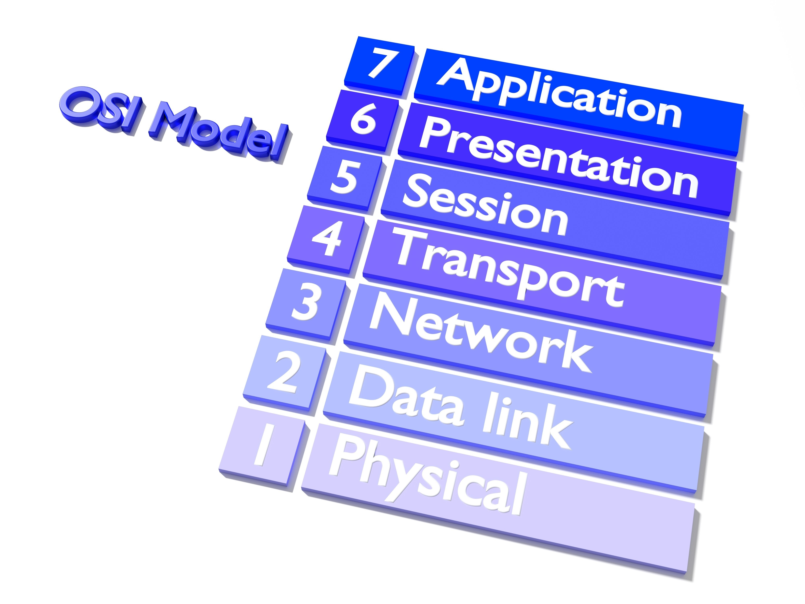

A evolução das tecnologias de redes de computadores em segundo plano
Os marcos principais dessa evolução:
A Linha do Tempo da Conectividade
-ARPANET (O Ponto de Partida): Criada no final dos anos 60 pelo Departamento de Defesa dos EUA, foi a primeira rede a utilizar a comutação de pacotes. Antes disso, a comunicação dependia de circuitos dedicados (como as linhas telefônicas antigas), o que era ineficiente.
-A Padronização com TCP/IP: Nos anos 80, a adoção do protocolo $TCP/IP$ permitiu que diferentes tipos de redes conversassem entre si. Foi aqui que a "internet" (interconexão de redes) realmente nasceu, estabelecendo uma linguagem universal para o tráfego de dados.
-Ethernet e Redes Locais (LANs): O desenvolvimento do padrão Ethernet (IEEE 802.3) por Robert Metcalfe permitiu que computadores dentro de um mesmo prédio fossem conectados de forma barata e rápida, usando cabos coaxiais e, posteriormente, pares trançados.
-A Explosão da World Wide Web (WWW): No início dos anos 90, Tim Berners-Lee criou o HTTP e o HTML. A rede deixou de ser uma ferramenta acadêmica/militar para se tornar visual e acessível ao público geral através dos primeiros navegadores.
-Revolução Sem Fio (Wi-Fi): A chegada do padrão IEEE 802.11 no final da década de 90 eliminou a necessidade de cabos para o usuário final, mudando drasticamente a arquitetura de escritórios e residências.
-Redes Definidas por Software (SDN) e Nuvem: Recentemente, passamos do hardware rígido para a virtualização. Hoje, a inteligência da rede não está apenas nos roteadores físicos, mas em softwares que gerenciam o tráfego de forma dinâmica em grandes Data Centers e na nuvem, permitindo escalabilidade e flexibilidade sem precedentes.

Detalhes Cruciais e Conceitos Técnicos
Além da cronologia, a arquitetura das redes possui camadas de complexidade que garantem seu funcionamento:
Modelo OSI vs. TCP/IP: O modelo OSI é uma referência teórica de 7 camadas, enquanto o TCP/IP é um modelo prático de 4 camadas. Ambos ajudam a entender como os dados são processados e transmitidos.
Meios de Transmissão: Desde cabos coaxiais e fibra óptica até ondas de rádio para Wi-Fi, cada meio tem suas vantagens e limitações em termos de velocidade, alcance e interferência.
Topologias de Rede: As formas como os dispositivos estão conectados (estrela, barramento, anel) afetam a eficiência e a resiliência da rede.
Segurança de Redes: Com o aumento das ameaças cibernéticas, técnicas como firewalls, criptografia e autenticação se tornaram essenciais para proteger os dados.
Redes Definidas por Software (SDN): SDN separa o plano de controle do plano de dados, permitindo que a rede seja programável e adaptável às necessidades em tempo real.
Pontos Principais da Evolução (Resumo)
Descentralização: A mudança de sistemas centrais (Mainframes) para redes distribuídas onde cada nó tem poder de processamento.
Mobilidade: A transição do acesso fixo (mesa de trabalho) para o acesso onipresente (smartphones e 5G).
Segurança: O foco mudou de "apenas conectar" para "conectar de forma segura", com a implementação de criptografia de ponta a ponta e protocolos como o HTTPS/TLS.
Escalabilidade: A capacidade da infraestrutura moderna de suportar bilhões de dispositivos simultâneos sem colapsar.
Virtualização: A evolução do hardware para a virtualização de redes, permitindo a criação de redes virtuais sobre uma infraestrutura física compartilhada.